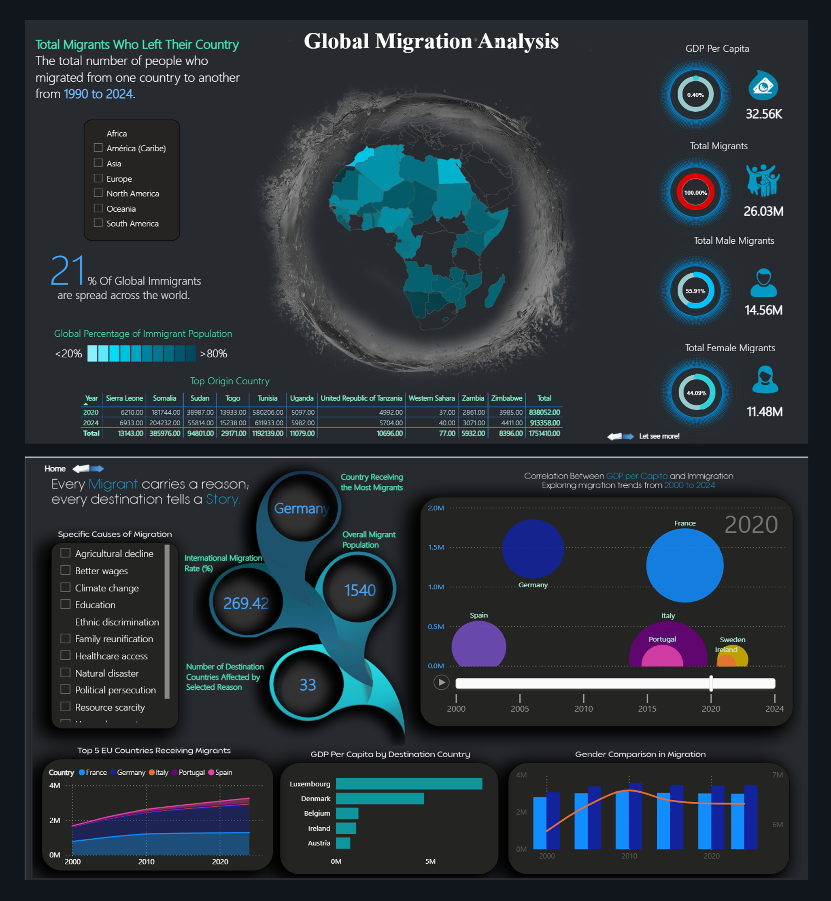

Global Immigration Visualization project

The Global Immigration Visualization project explores patterns and dynamics of international migration over the past decades. Using interactive charts and maps, the project highlights migration flows between regions, countries, and continents, offering a comprehensive view of how people move across borders and the reasons behind these movements.
Description of the Project
This project leverages public immigration datasets from trusted sources such as the UN, World Bank, and OECD to provide visual insights into global migration. It showcases trends such as the top countries of origin and destination, historical shifts in migration volumes, and regional push-and-pull factors like economy, conflict, and climate change.
Steps Taken in the Project:
Data Collection and Preparation:
- UN and World Bank Datasets: Compiled global immigration statistics by year, country, and region.
- Cleaning and Transformation: Used Python (Pandas & NumPy) to clean missing values, normalize country names, and structure data into analysis-ready format.
- Enrichment: Included GDP, conflict index, and climate risk data to cross-analyze migration motives.
Interactive Visualizations:
The project features multiple visualizations built with Power BI and Python libraries such as Plotly and Seaborn:
- Choropleth Maps: Show immigration and emigration flows by region and year.
- Line and Bar Charts: Track changes in immigration over time across key countries.
- Heatmaps and Correlation Matrices: Reveal relationships between economic factors and migration volumes.
Core Findings:
The data reveals significant global trends, such as:
- Increasing migration from the Global South to developed countries.
- Economic stability and job opportunities as key pull factors.
- Conflicts and climate events as major drivers of displacement.
Impact and Use Cases:
- For Policymakers: Supports informed decisions on migration policy and refugee intake.
- For Researchers: Offers a data-driven view of migration dynamics over time.
- For the Public: Promotes awareness and understanding of global migration patterns.
Target Audience and Scope:
The project is aimed at analysts, students, educators, NGOs, and international institutions interested in the study of global migration. It can be extended to include refugee statistics and forecasts using machine learning models.
Unique Value Proposition:
- Data Transparency: Based entirely on open, verified global datasets.
- Comparative Insights: Allows users to compare countries and regions interactively.
- Educational Utility: Ideal for classroom or academic use as an exploratory tool.
Next Steps:
- Time Series Forecasting: Predict future migration patterns with LSTM and regression models.
- Deeper Geopolitical Analysis: Cross-analyze with conflict and climate displacement data.
- Dashboard Deployment: Host visualizations on a live dashboard using Power BI or Streamlit.
Conclusion:
The Global Immigration Visualization project transforms raw data into meaningful insights about migration. It not only informs policy and public understanding, but also opens doors for future research, encouraging data-driven discussions about one of the most pressing global issues of our time.